WhittleFactory¶
- class WhittleFactory(*args)¶
Whittle estimator of a scalar ARMA Gaussian process.
- Available constructors:
WhittleFactory()
WhittleFactory(p, q, invert)
WhittleFactory(indP, indQ, invertible)
- Parameters
- pint
Order of the AR part of the 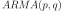 process of dimension
 .
.- qint
Order of the MA part of the process of dimension
.- invertiblebool, optional
Restrict the estimation to invertible ARMA processes.
By default: True.
- indP
Indices All the
 orders that will be investigated.
Care: not yet implemented.
orders that will be investigated.
Care: not yet implemented.- indQ
Indices All the
orders that will be investigated.
Care: not yet implemented.
Notes
We suppose here that the white noise is normal with zero mean and variance
 . It implies that the ARMA process estimated is normal.
. It implies that the ARMA process estimated is normal.For each order 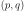, the estimation of the coefficients 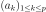, 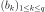 and the variance
is done using the Whittle estimator which is based on the maximization of the likelihood function in the frequency domain.The principle is detailed hereafter for the case of a time series : in the case of a process sample, the estimator is similar except for the periodogram which is computed differently.
Let
 be a multivariate time series of dimension from an process.
be a multivariate time series of dimension from an process.The spectral density function of the process writes :
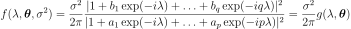
where 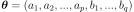 and
 is the frequency value.
is the frequency value.The Whittle log-likelihood writes :
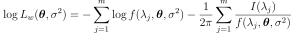
where :
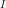 is the non parametric estimate of the spectral density, expressed in the Fourier space (frequencies in
![[0,2\pi]](../../_images/math/43ef027514aae4387900dfc8d71fbb06bdb4f304.svg) instead of 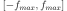). OpenTURNS uses by default the Welch estimator.
instead of 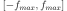). OpenTURNS uses by default the Welch estimator.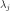 is the 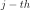 Fourier frequency, 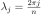, 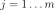 with
 the largest integer 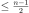.
the largest integer 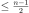.
We estimate the 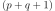 scalar coefficients by maximizing the log-likelihood function. The corresponding equations lead to the following relation :
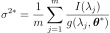
where 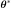 maximizes :
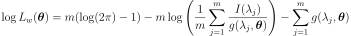
The Whitle estimation requires that :
the determinant of the eigenvalues of the companion matrix associated to the polynomial 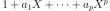 are outside the unit disc, which guarantees the stationarity of the process;
the determinant of the eigenvalues of the companion matrix associated to the polynomial are outside the unit disc, which guarantees the invertibility of the process.
The criteria AIC, 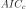 (corrected AIC) and BIC are evaluated to help the model selection:
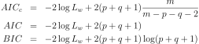
where
is half the number of points of the time grid of the process sample (if the data are a process sample) or in a block of the time series (if the data are a time series).The BIC criterion leads to a model that gives a better prediction. The AIC criterion selects the best model that fits the given data. The criterion improves the previous one by penalizing a too high order that would artificially fit to the data.
Examples
Create a time series from a scalar ARMA(4,2) and a normal white noise:
>>> import openturns as ot >>> myTimeGrid = ot.RegularGrid(0.0, 0.1, 100) >>> myWhiteNoise = ot.WhiteNoise(ot.Triangular(-1.0, 0.0, 1.0), myTimeGrid) >>> myARCoef = ot.ARMACoefficients([0.4, 0.3, 0.2, 0.1]) >>> myMACoef = ot.ARMACoefficients([0.4, 0.3]) >>> myARMAProcess = ot.ARMA(myARCoef, myMACoef, myWhiteNoise) >>> myTimeSeries = myARMAProcess.getRealization() >>> myProcessSample = myARMAProcess.getSample(10)
Estimate the ARMA process specifying the orders:
>>> myFactory_42 = ot.WhittleFactory(4, 2)
Check the default SpectralModelFactory:
>>> print(myFactory_42.getSpectralModelFactory())
Set a particular spectral model: WelchFactory as SpectralModelFactory with the Hann filtering window:
>>> myFilteringWindow = ot.Hann() >>> mySpectralFactory = ot.WelchFactory(myFilteringWindow, 4, 0) >>> myFactory_42.setSpectralModelFactory(mySpectralFactory) >>> print(myFactory_42.getSpectralModelFactory())
Estimate the ARMA process specifying a range for the orders:
p = [1, 2, 4] and q = [4,5,6]:
>>> pIndices = ot.Indices([1, 2, 4]) >>> qIndices = ot.Indices(3) >>> qIndices.fill(4,1) >>> myFactory_Range = ot.WhittleFactory(pIndices, qIndices)
To get the quantified AICc, AIC and BIC criteria:
>>> myARMA_42, myCriterion = myFactory_42.buildWithCriteria(ot.TimeSeries(myTimeSeries)) >>> AICc, AIC, BIC = myCriterion[0:3]
Methods
build(*args)Estimate the ARMA process.
buildWithCriteria(*args)Estimate the ARMA process.
Clear the history of the factory.
Desactivate the history of all the estimated models.
Activate the history of all the estimated models.
Accessor to the object's name.
Accessor to the current P order.
Accessor to the current Q order.
Check whether the history mecanism is activated.
getId()Accessor to the object's id.
Accessor to the invertible constraint.
getName()Accessor to the object's name.
getP()Accessor to the P orders.
getQ()Accessor to the Q orders.
Accessor to the object's shadowed id.
Accessor to the spectral factory.
Accessor to the starting points for the optimization step.
Accessor to the verbose mode.
Accessor to the object's visibility state.
hasName()Test if the object is named.
Test if the object has a distinguishable name.
Check whether the history mecanism is activated.
setInvertible(invertible)Accessor to the invertible constraint.
setName(name)Accessor to the object's name.
setShadowedId(id)Accessor to the object's shadowed id.
setSpectralModelFactory(factory)Accessor to the spectral factory.
setStartingPoints(startingPoints)Accessor to the starting points for the optimization step.
setVerbose(verbose)Accessor to the verbose mode.
setVisibility(visible)Accessor to the object's visibility state.
- __init__(*args)¶
- build(*args)¶
Estimate the ARMA process.
- Available usages:
build(myTimeSeries)
build(myProcessSample)
- Parameters
- myTimeSeries
TimeSeries One realization of the process.
- myProcessSample
ProcessSample Several realizations of the process.
- myTimeSeries
- Returns
- myARMA
ARMA The process estimated with the Whittle estimator.
- myARMA
Notes
The model selection is made using the spectral density built using the given data and theoretical spectral density of the ARMA process.
The best ARMA process is selected according to the corrected AIC criterion.
- buildWithCriteria(*args)¶
Estimate the ARMA process.
- Available usages:
buildWithCriteria(myTimeSeries)
buildWithCriteria(myProcessSample)
- Parameters
- myTimeSeries
TimeSeries One realization of the process.
- myProcessSample
ProcessSample Several realizations of the process.
- myTimeSeries
- Returns
Notes
The model selection is made using the spectral density built using the given data and theoretical spectral density of the ARMA process.
The best ARMA process is selected according to the corrected AIC criterion.
- clearHistory()¶
Clear the history of the factory.
Notes
Clear the history of the factory.
- disableHistory()¶
Desactivate the history of all the estimated models.
Notes
Desactivate the history mechanism which is the trace of all the tested models and their associated information criteria.
- enableHistory()¶
Activate the history of all the estimated models.
Notes
Activate the history mechanism which is the trace of all the tested models and their associated information criteria.
By default, the history mecanism is activated.
- getClassName()¶
Accessor to the object’s name.
- Returns
- class_namestr
The object class name (object.__class__.__name__).
- getCurrentP()¶
Accessor to the current P order.
- Returns
- pint
Order of the AR part of the process of dimension
.
- getCurrentQ()¶
Accessor to the current Q order.
- Returns
- qint
Order of the MA part of the process of dimension
.
- getHistory()¶
Check whether the history mecanism is activated.
- Returns
- histMeca list of
WhittleFactoryState Returns the collection of all the states that have been built for the estimation.
- histMeca list of
- getId()¶
Accessor to the object’s id.
- Returns
- idint
Internal unique identifier.
- getInvertible()¶
Accessor to the invertible constraint.
- Returns
- invertiblebool
The initial AR coefficients used for the optimization algorithm.
- getName()¶
Accessor to the object’s name.
- Returns
- namestr
The name of the object.
- getShadowedId()¶
Accessor to the object’s shadowed id.
- Returns
- idint
Internal unique identifier.
- getSpectralModelFactory()¶
Accessor to the spectral factory.
- Returns
- initARCoeff
SpectralModelFactory The spectral factory used to estimate the spectral density based on the data.
- initARCoeff
- getStartingPoints()¶
Accessor to the starting points for the optimization step.
- Returns
- startPointsLista list of
Point Starting points for the optimization step, for each pair of orders that will be tested.
- startPointsLista list of
- getVerbose()¶
Accessor to the verbose mode.
- Returns
- verboseModebool
Get the verbose mode while both the exploration of the possible models and the optimization steps.
- getVisibility()¶
Accessor to the object’s visibility state.
- Returns
- visiblebool
Visibility flag.
- hasName()¶
Test if the object is named.
- Returns
- hasNamebool
True if the name is not empty.
- hasVisibleName()¶
Test if the object has a distinguishable name.
- Returns
- hasVisibleNamebool
True if the name is not empty and not the default one.
- isHistoryEnabled()¶
Check whether the history mecanism is activated.
- Returns
- histMecbool
Check whether the history mecanism is activated.
By default, the history mecanism is activated.
- setInvertible(invertible)¶
Accessor to the invertible constraint.
- Parameters
- invertiblebool
The initial AR coefficients used for the optimization algorithm.
- setName(name)¶
Accessor to the object’s name.
- Parameters
- namestr
The name of the object.
- setShadowedId(id)¶
Accessor to the object’s shadowed id.
- Parameters
- idint
Internal unique identifier.
- setSpectralModelFactory(factory)¶
Accessor to the spectral factory.
- Parameters
- spectralModelFact
SpectralModelFactory The spectral factory used to estimate the spectral density based on the data.
- spectralModelFact
- setStartingPoints(startingPoints)¶
Accessor to the starting points for the optimization step.
- Parameters
- startPointsLista list of
Point Starting points for the optimization step, for each pair of orders that will be tested.
- startPointsLista list of
- setVerbose(verbose)¶
Accessor to the verbose mode.
- Parameters
- verboseModebool
Set the verbose mode while both the exploration of the possible models and the optimization steps.
- setVisibility(visible)¶
Accessor to the object’s visibility state.
- Parameters
- visiblebool
Visibility flag.